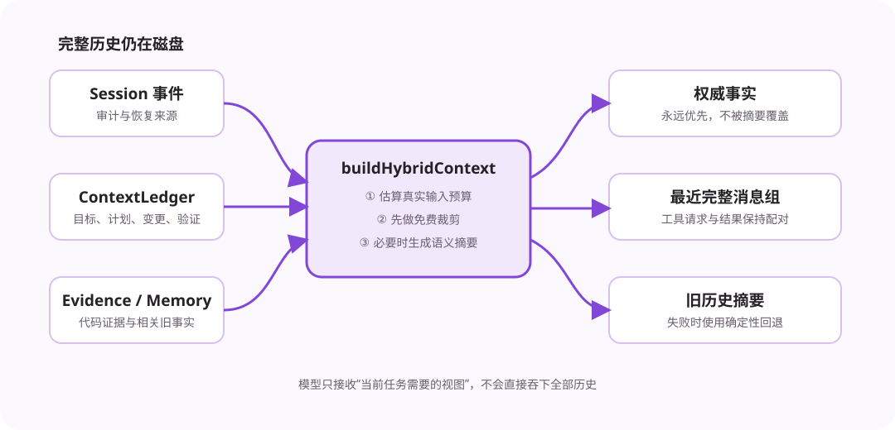

完整历史用于恢复和审计，模型上下文只保留当前决策真正需要的信息。两者不能混为一谈。

| 信息 | 作用 |
|---|---|
| ContextLedger | 当前目标、计划、文件变更版本、验证和错误。它是权威状态。 |
| FileEvidence | 模型最近读取过的代码片段和内容哈希。文件变化后旧证据失效。 |
| MemoryIndex | 从旧事件中找回与当前目标、路径或错误相关的事实。 |
| 最近消息 | 保留用户原话和最新的完整工具请求/结果。 |
命令可能输出几万字符，搜索也可能返回大量命中。完整结果会保存到事件或 Artifact 文件中；发送给模型的 Observation 只保留路径、退出码、错误尾部和关键诊断。模型仍能读取 Artifact 的指定片段。
buildHybridContext() 先使用不调用模型的方式减小输入：删除重复证据、压缩旧工具输出、只保留相关记忆，并按完整消息组整理历史。只有这些处理仍无法满足预算时，才请求模型生成语义摘要。
系统先从模型上下文窗口中扣除最大输出和安全余量，得到可用输入预算。当内容超过预算的 75% 时开始压缩，目标降到 60%。这样能为下一轮新增工具结果预留空间。
摘要请求失败、超时或被取消时，系统使用确定性摘要继续运行，不会让主 Turn 因辅助功能失败而失败。
真正发生语义压缩时会生成 ContextSnapshot。它记录摘要覆盖到哪个事件、保留了哪些消息组、当时的账本版本、模型和 token 校准系数。恢复 Session 时可以准确重建压缩后的模型视图。
字符估算不可能完全等于模型返回的 token 数。系统用真实 usage 计算校准比例，并按模型保存。后续预算会更接近真实消耗。比例同时写入 ContextSnapshot，重启后继续使用。
模型读取文件后，Evidence 代表当时的内容。写入、撤销或恢复都会改变文件，因此 ChangeManager 会按路径清除旧 Evidence。下一次需要代码时必须重新读取，避免模型依据旧版本继续修改。
先保权威账本和最近完整工具组，再保相关证据，最后才保旧对话原文。摘要只解释过去，不能覆盖当前事实。